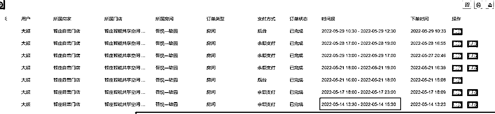
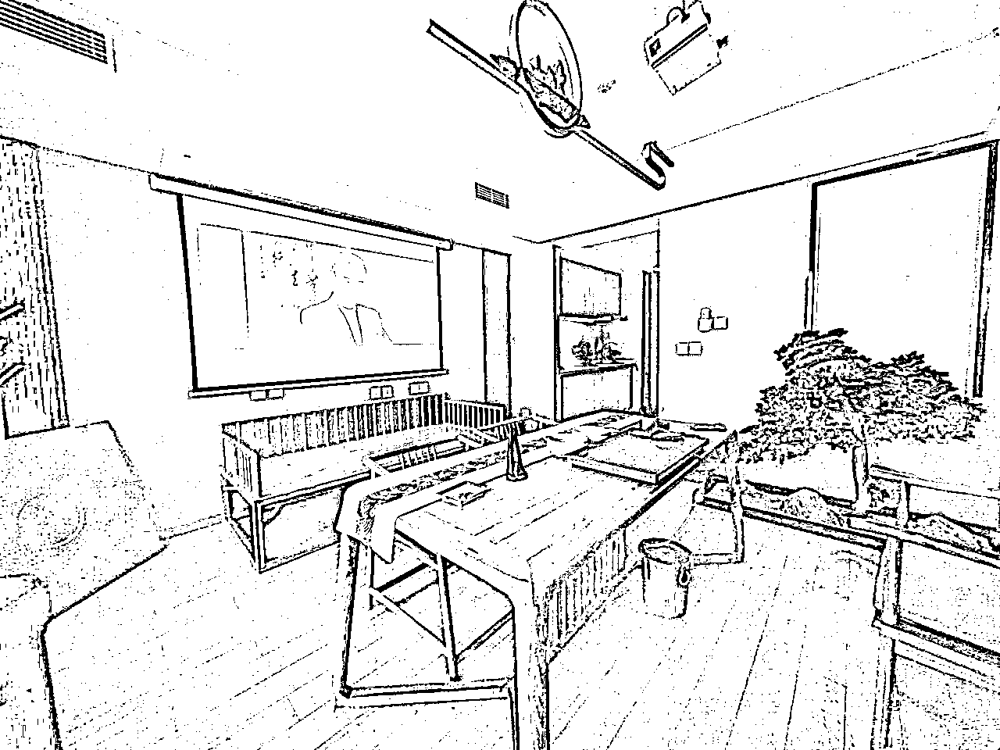
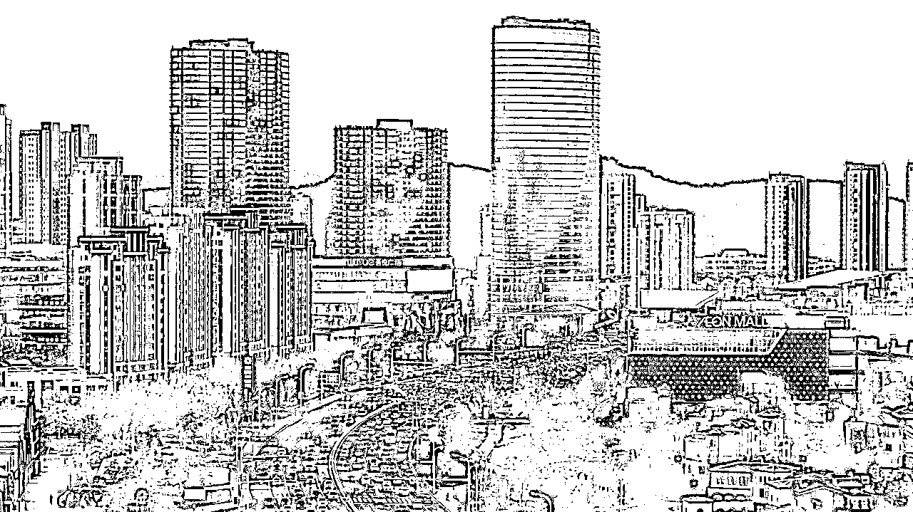
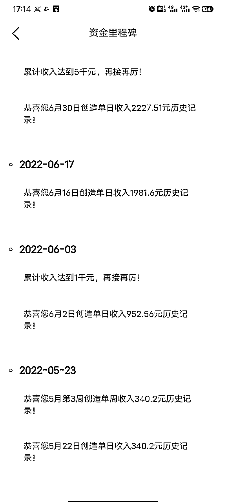
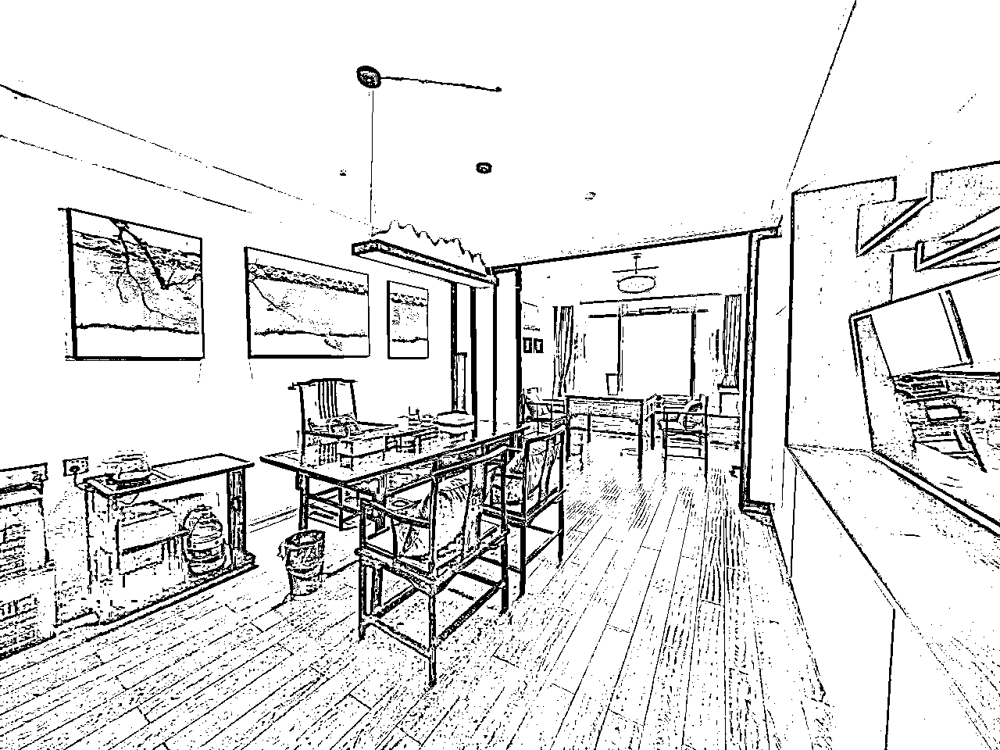
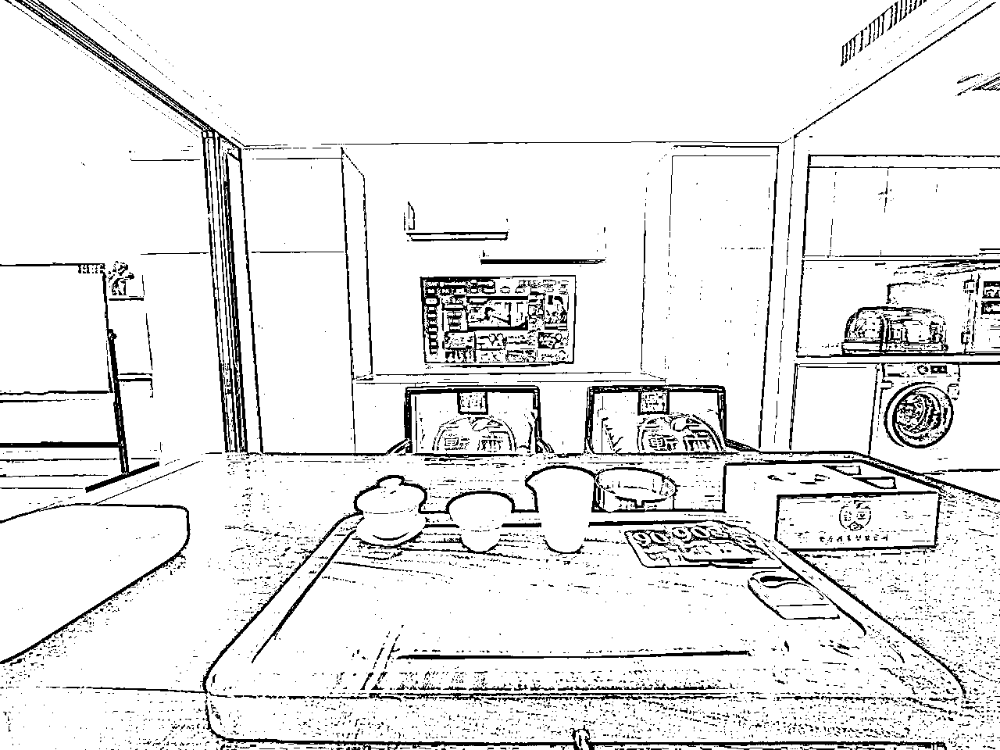
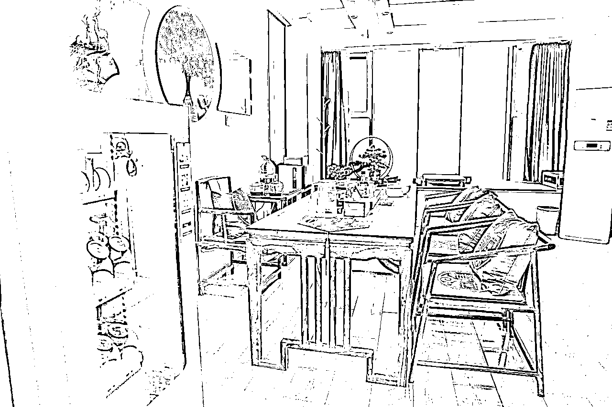
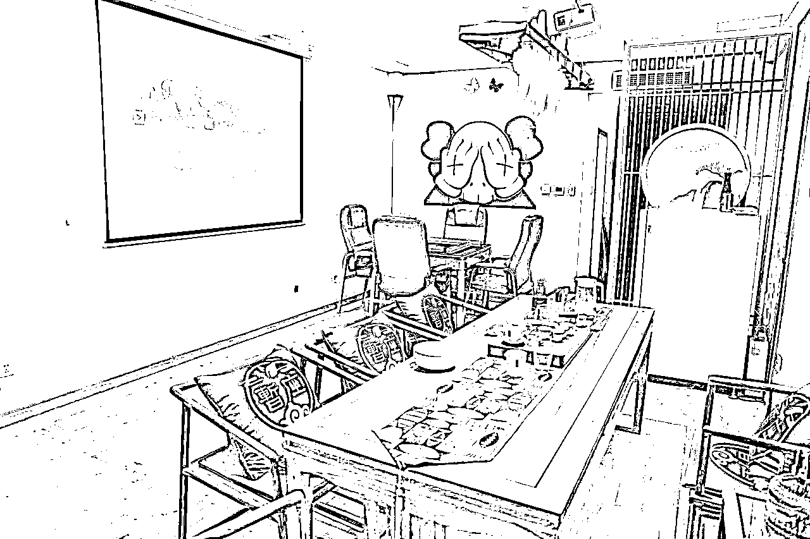
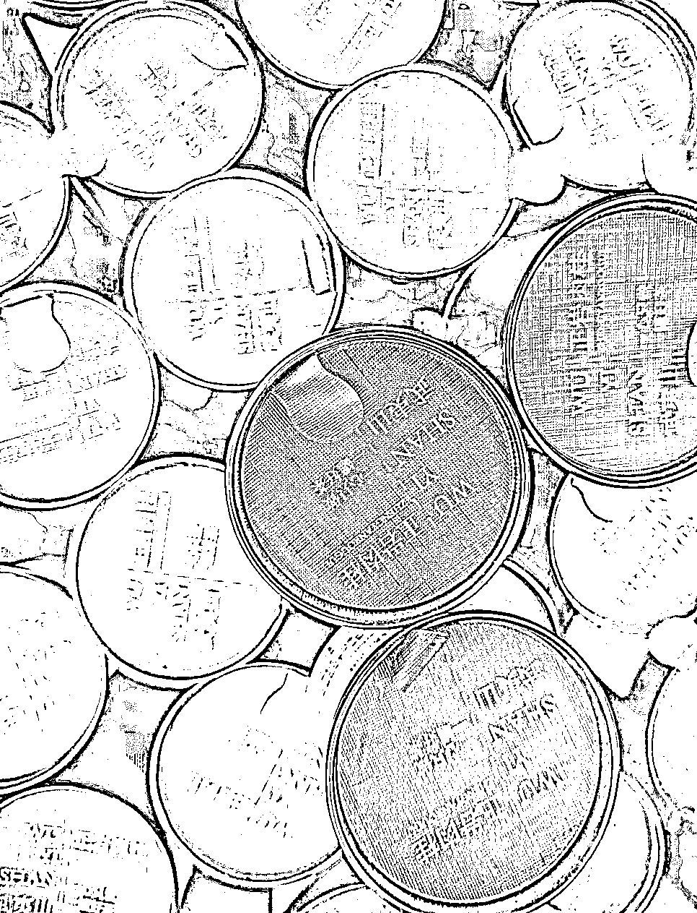
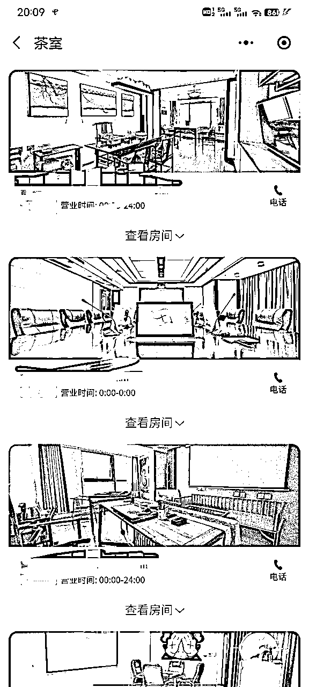

来源：https://bdjcnhllb0.feishu.cn/docx/RaLDdlBljoKldlx1nYhcy4VOnYb
为什么要做共享空间
21年疫情 自己当时自持的写字楼 租也租不就出去 卖的话也卖不掉 一个季度2000+的物业费 只出不进的日子不好过 正好当时去了一趟厦门 在厦门有个6茶共享茶室 寻思准备做一个差不多的项目 当时洽谈了一下，加盟费不到8万 后来仔细研究了一下程序和运营方式 还是自己起个盘子开几家 等数据跑通 平稳了也跟竞品一样 去招加盟 哪怕不赚钱 能挣出来房租 水电费和物业费就行
当时自己手里有个技术开发的团队 然后找了云南的一个团队合作 我们这边负责软件 他们负责硬件 半年的时间 软硬件都开发并测试完毕 然后时间就来到22年将近5月了
挂了一个美团的茶室

开的第一单
开的第一单是一个00后的小姐姐 比较喜欢一个人发呆 选择我们的原因可能是离家里比较近 而且环境说的过去可以看个电影 还可以对着马路发呆 （ps:说实话，就这个装修 我无数次想把它砸掉重新装 总花费 房租1.5w/年 45平 民水民电贴全屋壁纸400 麻将机3500 桌椅3000 贵妃榻850 坐垫抱枕1200 装饰件2000 吊灯800 投影仪幕布1500）
后来流量就比较稳定 可能是屋里有麻将机的原因 多半是年轻人过来打麻将的 还有网红过来开会和直播以及部分商务客户 感谢各位客户宝宝 第一个月营业额就突破了5k （定价还是比传统茶室便宜 比棋牌室的价格高 98/2h 续时间的话一开始是19.9/h 后来是29.9/h）


放一个单店业绩图

7月份又陆续开了2家新店




流量一开始比较稳定 也算是加了不少尝试 最开始用的海底捞同款的小零食 定制的小罐装茶

有几个大的坑
1 食品安全
散装茶虽然说价格便宜 但是品质相对来说都比较烂 用小罐装的茶（单罐成本不超3元）相对来说给客户的体验好一点而且罐身上都有标签 食品安全可以放心 散装零食容易发潮 导致口感降低 容易出差评 用独立包装的小零食（海底捞同款或者刺猬阿甘等品牌）
店里统一用的4.5L农夫山泉 不到八块一桶 最开始店里实行的是一客一换 后来发现有的客户根本就不喝水 或者是三拨客户才能喝一桶水 一般都是直接让工人送四箱 客户自己拆 目前没有发现有丢水和往水桶里扔异物的 可能都是年轻人普遍素质比较高
2 关于房租以及装修
尽量选择能少装修的房间 只需要简单的贴壁纸 改电控 门控 进家具 设备 简单的保洁就可以 这样下来很省成本 没必要花太大的价钱在装修上面 民水民电的公寓比较适合这种小成本 轻人工的创业项目 可以找房东谈免租期 尽量谈到半个月以上 一个月以内 房租押一付三 直接找中介带看就可以 半个月的房租 相对来说找房子的效率比较高 后期直接跟房东对接（青岛是这样的 其他的一线城市不是特别了解）
3关于棋牌以及法律风险
咨询过律师 主要不抽水 不组局 就没有法律风险 店内标识一定要贴！！！禁止黄赌毒（主要还是体现提醒以及警示作用） 毕竟是无人的共享空间 客户需要筹码的话 就放两盒不同颜色 没有数值的卡片 纯色的就可以 没有定制的必要 同时也不给自己添加不必要的麻烦
4关于平台
平台是拿来吸引新客户的 第一次用平台来解决获客以及信任度的问题 复购的话还是用小程序或者是微信转账就可以 这样不用每次都被平台卡脖子 尽量让客户添加你的微信客服号 客服号发开门小程序
5关于安全
主要还是水电的安全以及店内财产安全 水的话 建议买一个米家的水位报警器 屋里加一个小爱同学 就可以实现语音控制电器 以及减少客户忘关水龙头所带来不必要的麻烦 电的话 我们开发的硬件（市场上也有不少智能控电的设备 只是还需要人为干预 ）财产安全 屋内尽量不要放太高价值的产品 尽量做到易损件标准化 可以快速补充 茶具 茶杯玻璃烧水壶尽量多备两套 可以快速替换
放一张小程序的图
